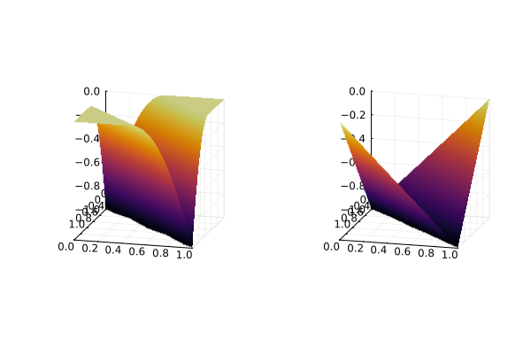

Input Supermodular Neural Networks with Flux.jl
This tutorial shows how to embed an input supermodular neural network (ISNN) model from Flux.jl into JuMP. The content is mostly taken from the paper "Learning to Solve Bilevel Programs with Binary Tender".
The tutorial is similar to Input Convex Neural Networks with Flux.jl, except that the structure of the neural network is slightly different (the weight matrix on x is non-negative). More generally, the two tutorials demonstrate how you can leverage structure in the function you are fitting to design and train custom layers, and then embed these into a JuMP model using MathOptAI.
Required packages
This tutorial requires the following packages:
using JuMPimport Fluximport HiGHSimport MathOptAIimport Plotsimport RandomRandom.seed!(1234)Random.TaskLocalRNG()Building the ISNN
Consider a neural network with the following structure:
\[\begin{aligned} z_1 & = \sigma_1(D_1 \tilde{x} + b_1) \\ z_k & = \sigma_k(W_{k-1} z_{k-1} + b_k + D_k \tilde{x}), \ \forall k = 2, \ldots, K, \\ \tilde{\phi} & = W_{K} z_{K} + b_{K + 1} + D_{K + 1} \tilde{x}. \end{aligned}\]
where $x$ is the input the network and $\tilde{x} := [x^\top, (\mathbf{1} - x)^\top]^\top$. If the weights $W_{1:K}$ and $D_{2:K}$ are non-negative and $\sigma$ is a convex activation function then the output of the network is supermodular with respect to $x$, and we say that the network is an Input Supermoduler Neural Network (ISNN).
We can implement an ISNN in Flux.jl as follows:
struct InputSupermodularNN{T} <: MathOptAI.AbstractPredictor D::Vector{Matrix{T}} W::Vector{Matrix{T}} b::Vector{Vector{T}} σ::Vector{Function}endFlux.@layer(InputSupermodularNN, trainable = (D, W, b))function InputSupermodularNN( (dim_in, dim_out)::Tuple{Int,Int}, layers::Pair{Int,<:Function}...; init = Flux.glorot_uniform,) dims, K = first.(layers), length(layers) D = [init(dims[k], 2 * dim_in) for k in 1:K] W = [init(dims[k], dims[k-1]) for k in 2:K] b = [init(dims[k]) for k in 1:K] push!(D, init(dim_out, 2 * dim_in)) push!(W, init(dim_out, dims[end])) push!(b, init(dim_out)) return InputSupermodularNN(D, W, b, Function[l for l in last.(layers)])endfunction (nn::InputSupermodularNN)(x::AbstractVector) x = [x; 1 .- x] z = nn.σ[1].(nn.D[1] * x + nn.b[1]) for k in 2:(length(nn.D)-1) z = nn.σ[k].( Flux.softplus.(nn.W[k-1]) * z .+ nn.b[k] .+ Flux.softplus.(nn.D[k]) * x, ) end return Flux.softplus.(nn.W[end]) * z .+ nn.b[end] .+ nn.D[end] * xendHere's an example:
chain = InputSupermodularNN((2, 1), 4 => Flux.relu)InputSupermodularNN(
2-element Vector{Matrix{Float32}}, # 20 parameters
1-element Vector{Matrix{Float32}}, # 4 parameters
2-element Vector{Vector{Float32}}, # 5 parameters
) # Total: 5 arrays, 29 parameters, 628 bytes.chain(Float32[0, 1])1-element Vector{Float32}:
-1.0625631Training the network
We will use the example from the paper to fit the following function:
ϕ(x) = -(min(1 + 2 * abs(x[1] - x[2]), 2) - 2) ^ 2ϕ (generic function with 1 method)We use the following training loop to train our model:
begin x = [0.0f0, 1.0f0] optimizer_state = Flux.setup(Flux.Adam(; eta = 1e-3, beta = (1e-3,)), chain) X = [[x1, x2] for x1 in x, x2 in x] for epoch in 1:1_000 loss, gradient = Flux.withgradient(chain) do model return sum((only(model(x)) - ϕ(x))^2 for x in X) end if epoch % 200 == 0 println("Epoch $epoch, loss = $loss") end Flux.update!(optimizer_state, chain, only(gradient)) endendEpoch 200, loss = 0.720728
Epoch 400, loss = 0.39583638
Epoch 600, loss = 0.19376837
Epoch 800, loss = 0.050881837
Epoch 1000, loss = 6.605369e-5Let us visualize the true and the fitted function side by side:
function surface(f; kwargs...) x = 0.0:0.01:1 g = (x...) -> x |> collect |> f |> only return Plots.surface(x, x, g; camera = (105, 15), kwargs...)endPlots.plot(surface(ϕ), surface(chain); zlims = (-1, 0), colorbar = false)
Building the predictor
We need to implement add_predictor for InputSupermodularNN in order to be able to embed this network into JuMP.
function MathOptAI.add_predictor( model::JuMP.AbstractModel, nn::InputSupermodularNN, x::Vector; kwargs...,) x = [x; 1 .- x] formulation = MathOptAI.PipelineFormulation(nn, Any[]) p = MathOptAI.Affine(nn.D[1], nn.b[1]) z, inner = MathOptAI.add_predictor(model, p, x) push!(formulation.layers, inner) z, inner = MathOptAI.add_predictor(model, nn.σ[1], z; kwargs...) push!(formulation.layers, inner) for k in 2:(length(nn.D)-1) p = MathOptAI.Affine(Flux.softplus.([nn.W[k-1] nn.D[k]]), nn.b[k]) z, inner = MathOptAI.add_predictor(model, p, [z; x]) push!(formulation.layers, inner) z, inner = MathOptAI.add_predictor(model, nn.σ[k], z; kwargs...) push!(formulation.layers, inner) end p = MathOptAI.Affine([Flux.softplus.(nn.W[end]) nn.D[end]], nn.b[end]) z, inner = MathOptAI.add_predictor(model, p, [z; x]) push!(formulation.layers, inner) return z, formulationendNow, we are ready to embed the ISNN into a JuMP model.
Embed ISNN into JuMP
We are going to build a JuMP model with binary decision variables which will be the inputs of the ISNN.
model = Model(HiGHS.Optimizer)set_silent(model)@variable(model, x[1:2], Bin)config = Dict(Flux.relu => MathOptAI.ReLUSOS1)y, formulation = MathOptAI.add_predictor(model, chain, x; config);y1-element Vector{JuMP.VariableRef}:
moai_Affine[1]We can now solve the model and compare the solutions for both minimization and maximization:
@objective(model, Max, only(y))optimize!(model)assert_is_solved_and_feasible(model)value.(x)2-element Vector{Float64}:
1.0
0.0@objective(model, Min, only(y))optimize!(model)assert_is_solved_and_feasible(model)value.(x)2-element Vector{Float64}:
1.0
1.0This page was generated using Literate.jl.